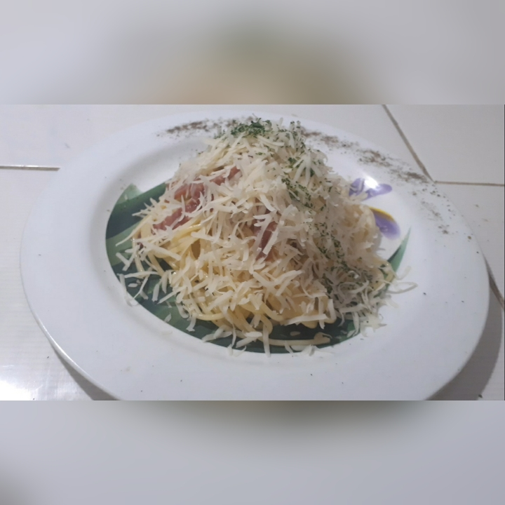

Welcome to Nabiilah's Cooking Page!
Hello everyone! It's me your chef, Nabiilah Adzraa!
It is undeniable that cooking is something that must be done every day. The hardest thing is to think about what to eat today. Don't worry, you've come to the right website! There are so many benefits if we eat nutritious food, do you know what are the benefits?
Click hereif you want to know!
What are we going to cook today?
Of course, there are many ingredients that we can process to become healthy foods. This time, we will make a famous special dish from Italy. Yup! Its Spaghetti Carbonara. Stay Tuned!
Check out this Video!
The Ingredients and Tools :
| No. | Ingredients | Tools |
| 1. | Spaghetti Carbonara-250 gr | Cooking Pot |
| 2. | Cooking Cream-20 ml | Teflon Pan |
| 3. | Fresh Milk-50 ml | Spatula |
| 4. | Cooking Oil-3 tbsp | Knife |
| 5. | Smoked Beef-100 gr | Strainer |
| 6. | Seasoning based on the video | Cheese grater |
| 7. | Water-400 ml | Spoon and Fork |
The Steps :
- Firstly, boil water in the cooking pot, wait until the water getting hot. Don’t forget to pour a spoon of cooking oil, to keep the spaghetti cooks smoothly.
- Put the spaghetti inside the boiling water, wait for about 7 minutes till spaghetti getting well cooked, by gently stiring the spaghetti.
- Then, drain the spaghetti by pouring it in the strainer. Keep it dry
- Prepare the garlic, and onion. Chop the garlic, and onion
- The next step is slice the smoked beef.

Contact
Thank you for visiting my page!
If you like my page, don't forget to share with everyone you know.
You can contact me here :
Email : nabiilahadzraa@gmail.com
The Steps :
- After that, put the cooking cream and milk. Stir it thorougly with the spatula.
- Put the spaghetti into the cream sauce, stir it gently until the spaghetti mixed with the cream sauce.
- Plate the spaghetti onto the plate.
- The last step, grate the cheese as much as you want.
- Finally, Cheese spaghetti carbonara ready to serve! Enjoy the tasty spaghetti!